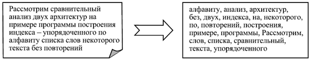
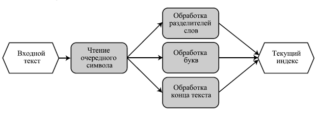

Разработка и оценка архитектуры на основе
сценариев
При проектировании архитектуры системы на основе
требований, зафиксированных в виде вариантов использования, первые возможные
шаги состоят в следующем.
- Выделение
компонентов
- Выбирается
набор "основных" сценариев использования
— наиболее существенных и выполняемых чаще других.
- Исходя
из опыта проектировщиков, выбранного архитектурного
стиля (см. следующую лекцию) и требований к переносимости и удобству сопровождения системы определяются
компоненты, отвечающие за определенные действия в рамках этих сценариев, т.е. за решение определенных подзадач.
- Каждый
сценарий использования системы представляется
в виде последовательности обмена сообщениями между полученными
компонентами.
- При
возникновении дополнительных хорошо выделенных
подзадач добавляются новые компоненты, и сценарии уточняются.
- Определение
интерфейсов компонентов
- Для
каждого компонента в результате выделяется его интерфейс — набор
сообщений, которые он принимает от других компонентов и посылает им.
- Рассматриваются
"неосновные" сценарии, которые так же разбиваются на
последовательности обмена сообщениями с использованием, по возможности,
уже определенных интерфейсов.
- Если
интерфейсы недостаточны, они расширяются.
- Если
интерфейс компонента слишком велик, или компонент отвечает за слишком
многое, он разбивается на более мелкие.
- Уточнение
набора компонентов
- Там,
где это необходимо в силу требований эффективности или удобства сопровождения, несколько компонентов могут
быть объединены в один.
- Там,
где это необходимо для удобства сопровождения
или надежности, один компонент может быть разделен на несколько.
- Достижение
нужных свойств.
Все это делается до тех пор,
пока не выполнятся следующие условия:
- Все
сценарии использования реализуются в виде
последовательностей обмена сообщениями между компонентами в рамках их
интерфейсов.
- Набор
компонентов достаточен для обеспечения всей нужной функциональности,
удобен для сопровождения или портирования на другие платформы и не
вызывает заметных проблем производительности.
- Каждый
компонент имеет небольшой и четко очерченный круг решаемых задач и строго
определенный, сбалансированный по размеру интерфейс.
На основе возможных сценариев
использования или модификации системы возможен также анализ характеристик архитектуры и оценка ее пригодности
для поставленных задач или сравнительный анализ
нескольких архитектур. Это так называемый метод анализа архитектуры
ПО (Software Architecture Analysis Method, SAAM).
Основные его шаги следующие.
- Определить
набор сценариев действий пользователей или внешних систем, использующих
некоторые возможности, которые могут уже планироваться для реализации в
системе или быть новыми. Сценарии должны быть значимы для конкретных
заинтересованных лиц, будь то пользователь, разработчик, ответственный за
сопровождение, представитель контролирующей организации и пр. Чем полнее
набор сценариев, тем выше будет качество анализа. Можно также оценить
частоту появления и важность сценариев, возможный ущерб от невозможности
их выполнить.
- Определить
архитектуру (или несколько сравниваемых архитектур). Это должно быть
сделано в форме, понятной всем участникам оценки.
- Классифицировать
сценарии. Для каждого сценария из набора должно быть определено,
поддерживается ли он уже данной архитектурой или для его поддержки нужно
вносить в нее изменения. Сценарий может поддерживаться, т.е. его
выполнение не потребует внесения изменений ни в один из компонентов, или
же не поддерживаться, если его выполнение требует изменений в описании
поведения одного или нескольких компонентов или изменений в их
интерфейсах. Поддержка сценария означает, что лицо, заинтересованное в его
выполнении, оценивает степень поддержки как достаточную, а необходимые при
этом действия — как достаточно удобные.
- Оценить
сценарии. Определить, какие из сценариев полностью поддерживаются
рассматриваемыми архитектурами. Для каждого неподдерживаемого сценария
надо определить необходимые изменения в архитектуре — внесение новых
компонентов, изменения в существующих, изменения связей и способов
взаимодействия. Если есть возможность, стоит оценить трудоемкость внесения
таких изменений.
- Выявить
взаимодействие сценариев. Определить какие компоненты требуется изменять
для неподдерживаемых сценариев; если требуется изменять один компонент для
поддержки нескольких сценариев — такие сценарии называют
взаимодействующими. Нужно оценить смысловые связи между взаимодействующими
сценариями.
Малая связанность по смыслу
между взаимодействующими сценариями означает, что компоненты, в которых они
взаимодействуют, выполняют слабо связанные между собой задачи и их стоит
декомпозировать.
Компоненты, в которых
взаимодействуют много (более двух) сценариев, также являются возможными
проблемными местами.
- Оценить
архитектуру в целом (или сравнить несколько заданных архитектур). Для
этого надо использовать оценки важности сценариев и степень их поддержки
архитектурой.
Рассмотрим сравнительный анализ
двух архитектур на примере индексатора — программы для построения индекса
некоторого текста, т.е. упорядоченного по алфавиту
списка его слов без повторений.

Рис. 16.2 Пример работы индексатора текста
- Выделим
следующие сценарии работы или модификации программы (рис. 16.2):
- Надо
сделать так, чтобы индексатор мог работать в инкрементальном режиме,
читая на входе одну фразу за другой и пополняя получаемый в процессе
работы индекс.
- Надо
сделать так, чтобы индексатор мог игнорировать предлоги, союзы,
местоимения, междометия, частицы и другие служебные слова.
- Надо
сделать так, чтобы индексатор мог обрабатывать тексты, подаваемые ему на
вход в виде архивов.
- Надо
сделать так, чтобы в индексе оставались только слова в основной
грамматической форме — существительные в единственном числе и
именительном падеже, глаголы в неопределенной форме и пр.
- Определим
две возможных архитектуры индексатора для сравнительного анализа.
- В
качестве первой архитектуры рассмотрим разбиение индексатора на два
компонента. Один компонент принимает на свой вход входной текст,
полностью прочитывает его и выдает на выходе список слов, из которых он
состоит. Второй компонент принимает на вход список слов, а на выходе
выдает его упорядоченный вариант без повторений. Этот вариант архитектуры
построен в стиле "каналы и фильтры" (см. следующую лекцию).
Рис. 16.3 Архитектура индексатора в стиле "каналы и
фильтры"
· Другой вариант архитектуры
индексатора устроен следующим образом (рис.
16.3). Имеется внутренняя структура данных, хранящая подготовленный на
настоящий момент вариант индекса. Он представляет собой упорядоченный список
без повторений всех слов, прочитанных до настоящего момента. Кроме того,
имеются две переменные — строка, хранящая последнее (быть может, не до конца)
прочитанное слово, и ссылка на то слово в подготовленном списке, которое
лексикографически следует за последним словом (соответственно, предшествующее
этому слово в списке лексикографически предшествует последнему прочитанному
слову).
В дополнение к этим данным имеются следующие
компоненты:
- Первый
читает очередной символ на входе и передает его на обработку одному из
остальных.
Если это разделитель слов (пробел,
табуляция, перевод строки), управление получает второй компонент.
Если это буква — третий.
Если входной текст кончается —
четвертый.
- Второй
компонент закачивает ввод последнего слова — оно помещается в список перед
тем местом, на которое указывает ссылка, после чего последнее слово
становится пустым, а ссылка начинает указывать на первое слово в списке.
- Третий
компонент добавляет прочитанную букву в конец последнего слова, после
чего, быть может, перемещает ссылку на следующее за полученным слово в
списке.
- Четвертый
компонент выдает полученный индекс на выход.
Эта архитектура построена в стиле
"репозиторий".

Рис. 16.4. Архитектура индексатора в стиле
репозитория
Определим поддерживаемые сценарии из
выделенного набора.
Этот сценарий прямо
поддерживается второй архитектурой.
Чтобы поддержать его в первой,
необходимо внести изменения в оба компонента так, чтобы первый компонент мог
пополнять промежуточный список, читая входной текст фраза за фразой, а второй —
аналогичным способом пополнять результирующий упорядоченный список, вставляя
туда поступающие ему на вход слова.
Обе архитектуры не
поддерживают этот сценарий.
Для его поддержки в первой
архитектуре необходимо изменить первый компонент или, лучше, вставить после
него дополнительный фильтр, отбрасывающий вспомогательные части речи.
Для поддержки этого сценария
второй архитектурой нужно ввести дополнительный компонент, который
перехватывает буквы, выдаваемые модулем их обработки (соответственно, этот
модуль больше не должен перемещать указатель по итоговому списку) и сигналы о
конце слова от первого компонента, после чего он должен отсеивать служебные
слова.
Этот сценарий также требует
изменений в обеих архитектурах.
Однако в обоих случаях эти
изменения одинаковы — достаточно добавить дополнительный компонент,
декодирующий архивы, если они подаются на вход.
Этот сценарий также не
поддерживается обеими архитектурами.
Требуемые им изменения
аналогичны требованиям второго сценария, только в этом случае дополнительный
компонент-фильтр должен еще и преобразовывать слова в их основную форму и
только после этого пытаться добавить результат к итоговому индексу.
Таким образом, требуется, как
и во втором случае, изменить или добавить один компонент в первой архитектуре и
изменить один и добавить новый — во второй.
· Мы
уже выполнили оценку сценариев на предыдущем шаге. Итоги этой оценки приведены
в таблице 16.1.
·
Мы видели, что при использовании первого варианта
архитектуры только для поддержки первого сценария пришлось бы вносить изменения
в ее компоненты. В остальных случаях достаточно было добавить новый компонент,
что несколько проще.
При использовании второго варианта в двух разных
сценариях, помимо добавления нового компонента, нам потребовалось изменить
компонент, обрабатывающий буквы.
|
Таблица
16.1. Итоги оценки двух вариантов архитектуры индексатора.
|
|
Архитектура
|
Сценарий
a
|
Сценарий
b
|
Сценарий
c
|
Сценарий
d
|
|
Каналы и фильтры
|
- -
|
+ + *
|
+ + *
|
+ + *
|
|
Репозиторий
|
+ + + +
|
+ + - + *
|
+ + + + *
|
+ + - + *
|
+ обозначает возможность не изменять компонент, -
— необходимость изменения компонента,
* — необходимость добавления одного компонента
В целом первая архитектура на предложенных
сценариях выглядит лучше второй. Единственный ее недостаток — отсутствие
возможности инкрементально поставлять данные на вход компонентам. Если его
устранить, сделав компоненты способными потреблять данные постепенно, эта
архитектура станет почти идеальным вариантом, поскольку она легко расширяется —
для решения многих дополнительных задач потребуется только добавлять компоненты
в общий конвейер.
Вторая архитектура, несмотря на выигрыш в
инкрементальности, проигрывает в целом. Основная ее проблема — слишком
специфически построенный компонент — обработчик букв. Необходимость изменить
его в нескольких сценариях показывает, что нужно объединить обработчик букв и
обработчик конца слов в единый компонент, выдающий слова целиком, после чего
полученная архитектура не будет ничем уступать исправленной первой.